Where We Are
Geographic Location
Ilocos Sur is a province located in the Ilocos Region (Region I) on the northwestern coast of Luzon, the largest island in the Philippines. The province occupies a narrow coastal strip along the South China Sea, with mountains rising steeply to the east.
Its capital and most famous city is Vigan City, a UNESCO World Heritage Site. The province is bounded by Ilocos Norte to the north, the South China Sea to the west, Abra and Mountain Province to the east, and La Union to the south.
Through the Ages
History of Ilocos Sur

Long before the Spaniards arrived, the Ilocos coast was already a thriving trade center. Chinese, Japanese, and Southeast Asian traders regularly visited the area. The Ilocanos, known for their industriousness, developed a distinct culture and language.
Spanish colonization began in 1572 when Juan de Salcedo led an expedition to the Ilocos region. The Augustinian friars established missions and built massive stone churches, many of which still stand today. Vigan was founded in 1572 and quickly became the administrative and commercial center of the entire Ilocos region.
Ancient Trade Hub
The Ilocos coast served as a major trading port for Chinese, Japanese, and neighboring Southeast Asian merchants centuries before Spanish arrival.
Spanish Colonization
Juan de Salcedo establishes Spanish rule and Vigan is founded as the colonial capital, creating the unique Spanish-Ilocano-Chinese culture visible today.
Philippine Revolution
Ilocanos played a significant role in the Philippine Revolution. Key battles were fought in the region, including the siege of the Pindangan Church.
Battle of Bessang Pass
Filipino and American forces defeated the Japanese army at Bessang Pass in the final major battle of WWII in the Philippines.
UNESCO Heritage Status
Vigan City is inscribed as a UNESCO World Heritage Site, recognizing its unique colonial architecture preserved over centuries.
Must-See Places
Known Attractions
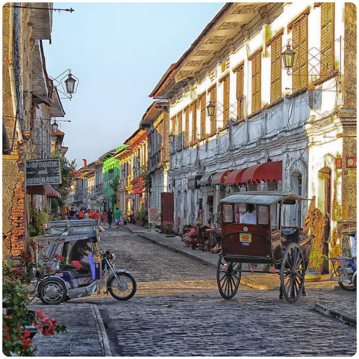
Calle Crisologo
UNESCO cobblestone heritage street with preserved Spanish-era houses and kalesas — walking through it feels like stepping back to the 17th century.
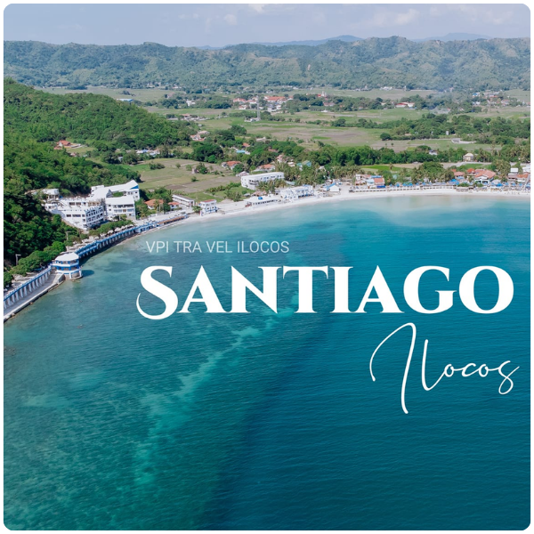
Santiago Cove
The most famous beach in Ilocos Sur — fine white sand, crystal-clear calm water, and dramatic rock formations. Often called the "Boracay of the North."
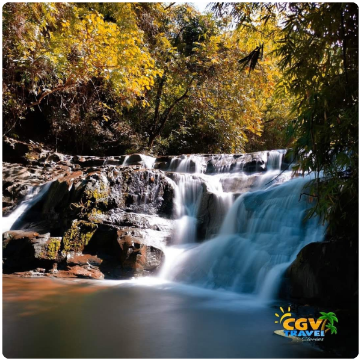
Kindelpin Falls, Salcedo
Surrounded by massive rock formations and lush tropical vegetation, the falls drop into a clear natural pool perfect for a refreshing swim.
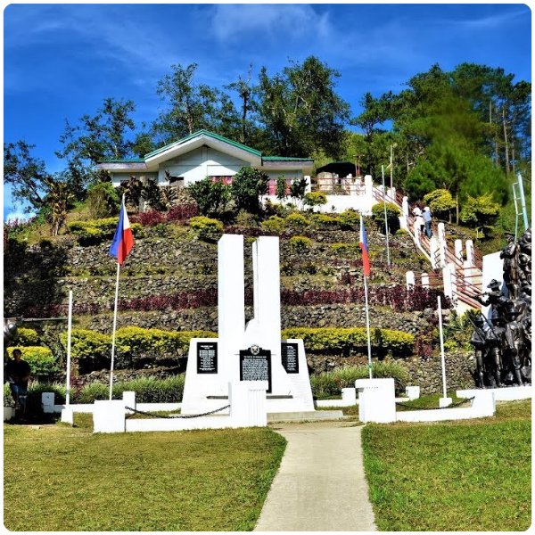
Bessang Pass
National Historical Landmark and site of the last major WWII battle in the Philippines. Over 1,200 meters above sea level with breathtaking mountain views.
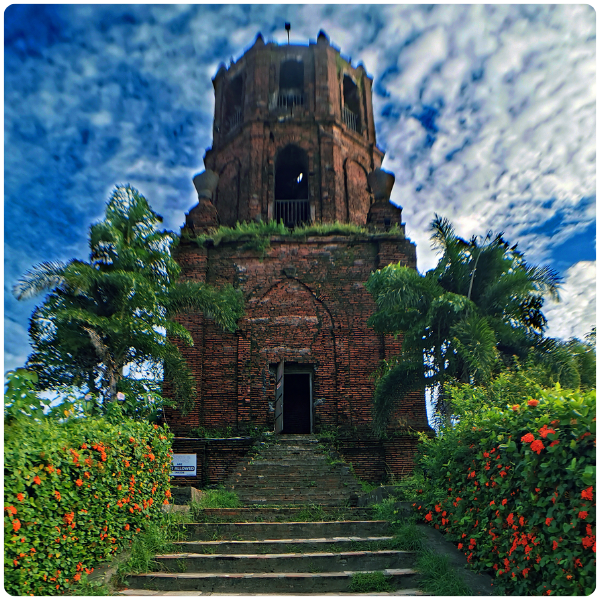
Bantay Church & Bell Tower
Built in 1590, one of the oldest churches in the Philippines. Its iconic bell tower once served as a Spanish-era watchtower with panoramic views of Vigan City.
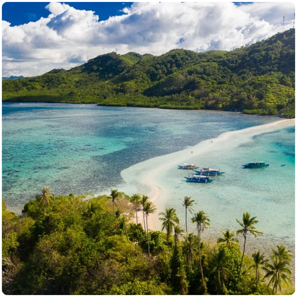
Snake Island & Sandbar
A stunning serpentine sandbar in Santiago that curves dramatically through turquoise waters — one of the most photogenic natural formations in Ilocos Sur.
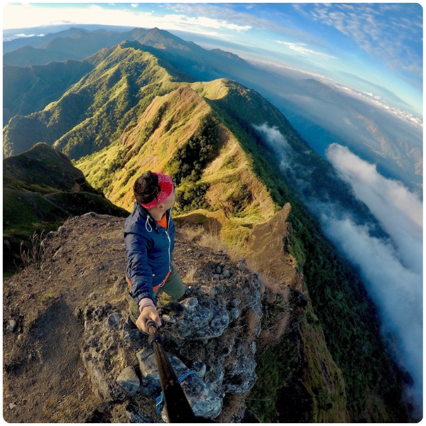
Mt. Tirad Pass
Site of General Gregorio del Pilar's heroic last stand in 1899 — a historical mountain trail of deep patriotic significance and natural beauty.
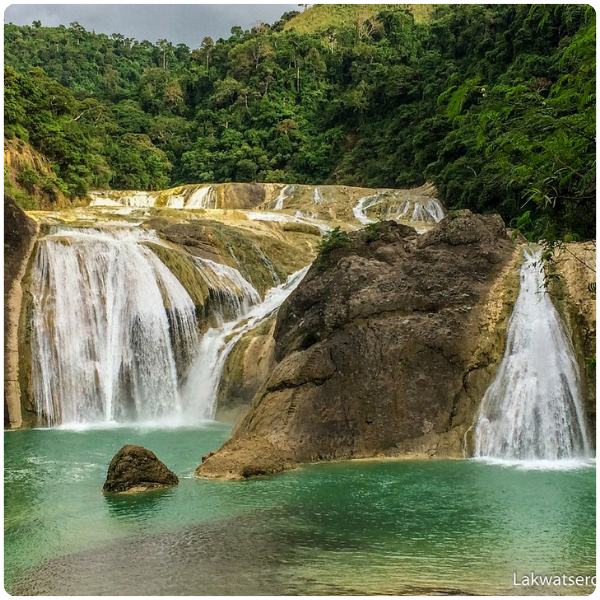
Pinsal Falls, Santa Maria
A breathtaking multi-drop waterfall cascading over smooth rock faces into a wide natural pool — one of the most visited natural attractions in the province.
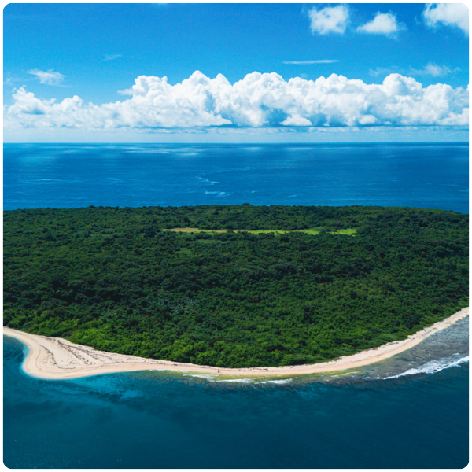
Salomague Island, Cabugao
A scenic island off the coast of Cabugao with calm turquoise waters, white sandy shores, and vibrant coral reefs ideal for snorkeling and swimming.
St. Paul Metropolitan Cathedral
First built in 1574, this magnificent baroque cathedral has stood as the spiritual heart of Vigan for over four centuries and is one of its most visited heritage structures.
Arts & Traditions
Culture & Traditions
Ilocos Sur is home to one of the richest cultural heritages in the Philippines. The Ilocano people are known for their industriousness, frugality, strong family values, and deep Catholic faith, traditions that have been passed down through generations for over four centuries.
Abel Iloco Weaving
Abel is a traditional Ilocano hand-woven fabric made on wooden looms. The intricate patterns and earthy colors of Abel cloth are symbols of Ilocano craftsmanship. Vigan is the center of Abel weaving in the Philippines.
Burnay Pottery
Burnay refers to traditional clay pots fired in wood-burning kilns. This centuries-old craft is still practiced in Vigan, producing characteristic dark-brown jars, cookware, and decorative pieces.
Ilocano Language & Literature
Ilocano is the third most spoken language in the Philippines and has a rich literary tradition including epic poems (biag ni lam-ang) and folk songs that date back centuries.
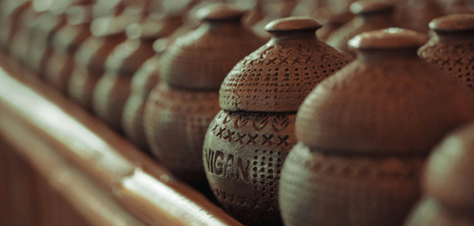
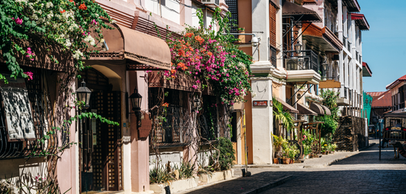
Your Reasons to Come
Why Visit Ilocos Sur?
UNESCO World Heritage
Vigan City is one of only a handful of UNESCO World Heritage cities in Southeast Asia, offering a genuinely preserved colonial experience found nowhere else in the region.
Exceptional Cuisine
Ilocano food is considered among the most flavorful in the Philippines. From Vigan longganisa to crispy bagnet and empanada — every meal is a cultural experience.
Natural Diversity
From Pacific coastline beaches and tropical waterfalls to highland mountain treks — Ilocos Sur offers an extraordinary range of natural environments.
Vibrant Festivals
The Kannawidan Festival, Vigan City Fiesta, and Longganisa Festival bring the province's culture to life with colorful processions, folk dances, and community celebrations.
Warm Hospitality
Ilocanos are known for their genuine warmth and hospitality. Visitors consistently rate the friendliness of locals as one of the highlights of their trip.
Excellent Value
Ilocos Sur is an affordable destination with many heritage sites, beaches, and natural attractions accessible for free or at very low entrance fees.